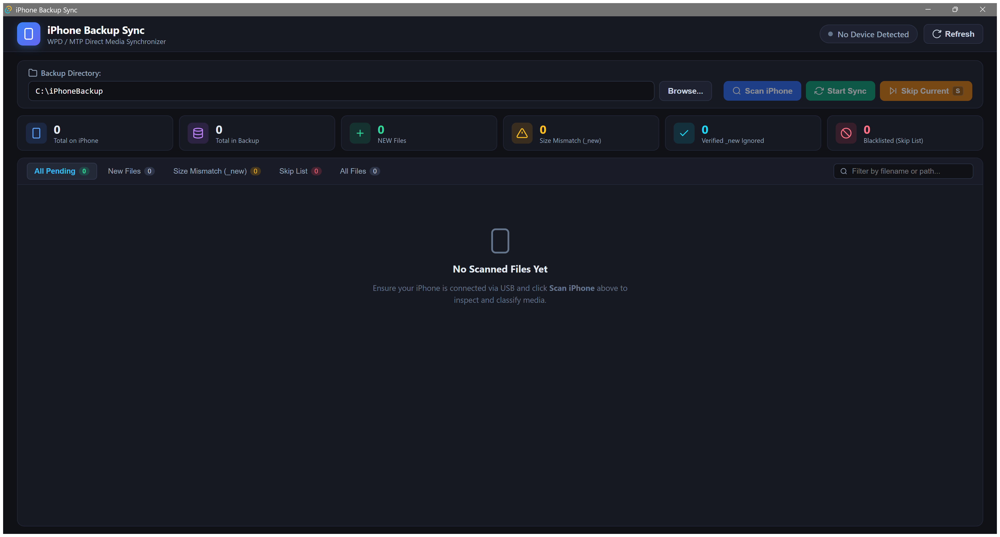

Incremental Smart Sync
Scans your destination drive and compares against DCIM files by exact byte size and path. Only new or modified media files are copied, skipping already backed-up items instantly.
Directly back up DCIM photos and videos over USB to external drives or local disks. Skips already backed-up files, handles size conflicts without overwriting, and operates completely offline with zero subscriptions or iTunes bloat.

Designed specifically to overcome Windows File Explorer MTP stalls, incomplete transfers, and opaque iTunes device images.
Scans your destination drive and compares against DCIM files by exact byte size and path. Only new or modified media files are copied, skipping already backed-up items instantly.
Never destroys original backup files. If an asset exists with
matching name but mismatched size, it is safely preserved with a
_new suffix (e.g. IMG_1234_new.HEIC).
Directly calls the Windows Portable Devices COM subsystem
(IPortableDevice, IStream) from native
Rust. Prevents Windows Explorer shell locks and "Device
unreachable" stalls.
Direct USB transfer straight to your external SSD or internal storage. Operates completely air-gapped without telemetry, background network calls, or third-party accounts.
Streams media in 64 KB - 256 KB chunks into temporary
.part files, atomically renaming only when verified.
Accidental cable disconnects or crashes clean up automatically on
restart.
Encounter a damaged or unreadable file? Press S to immediately skip the failing asset and clean up its fragment without aborting the queue. Right-click individual rows to sync single files.
See how iPhone Backup Sync delivers faster, safer, and cleaner backups than standard Windows and Apple tools.
| Feature / Capability | iPhone Backup Sync | Windows File Explorer | iTunes / iCloud for Windows |
|---|---|---|---|
| Incremental Sync | Yes - indexes destination and transfers only new files | No - manual drag-and-drop; copies everything or asks on each file | Partial - iTunes creates opaque backup image; iCloud requires internet |
| Conflict Handling |
Non-destructive
- preserves originals, appends _new
|
Destructive - overwrite prompt without byte inspection | Opaque - overwrites or hides based on cloud cache |
| Progress Transparency | Real-Time - exact stages, file count, throughput (MB/s) | None - green loading bar with generic estimates | Minimal - indeterminate spinning wheel |
| MTP Stability & Recovery |
High - atomic
.part streaming & lockfile tracking
|
Poor - stalls with "Device unreachable", corrupts fragments | Rigid - single timeout aborts whole batch |
| Stuck File Handling | Instant Skip - press S to bypass without halting batch | Freezes - hangs whole Explorer window; requires unplugging | Fails - aborts entire backup batch on unreadable items |
| Cloud & Subscription | Zero - 100% offline, local direct USB transfer | Zero - offline USB, but hampered by MTP driver stalls | Paid Plans - full camera roll requires monthly 2TB iCloud |
| Direct File Access | Standard Folders - direct access to standard JPG, HEIC, MP4, MOV | Standard Folders - if the Explorer copy finishes without hanging | Proprietary DB - hashed file manifests, unreadable in Explorer |
Indexes destination and transfers only new or modified files.
Manual drag-and-drop; copies everything or prompts on each file.
iTunes creates opaque backup image; iCloud requires internet.
Preserves originals, appends _new (e.g.
IMG_1234_new.HEIC).
Prompts to overwrite without byte verification.
Overwrites or hides based on cloud cache.
Exact stages, live file count, and streaming throughput (MB/s).
Opaque green loading bar with generic estimates.
Indeterminate spinning wheel without file counts.
Direct chunked .part streaming and safe lockfile
crash recovery.
Stalls with "Device unreachable" and leaves corrupt partial files.
Single connection timeout fails the entire batch transfer.
Press S to bypass unreadable asset without halting the batch.
Hangs entire Explorer window; requires task kill or unplugging.
Aborts entire backup operation on any single unreadable item.
100% offline, local direct USB transfer to your own drives.
Offline USB, but hampered by frequent MTP driver stalls.
Full camera rolls require recurring monthly 2TB iCloud plans.
Direct access to standard JPG, HEIC, MP4, MOV files on external storage.
Standard files, provided the Explorer copy completes without hanging.
Hashed manifest database files, completely unreadable in Explorer.
Clean, straightforward workflow designed for quick daily or weekly photo library archival.
Connect your iPhone to your Windows PC via USB cable. Unlock the device and tap Trust This Computer if prompted. The app automatically detects your connected iPhone.
Click Browse... to select any destination directory on your internal storage, external SSD, or network drive. The app builds an index of previously backed up files.
Click Scan iPhone to inspect classified media:
NEW, MISMATCH, and
VERIFIED IGNORED. Then click
Start Sync to copy all pending assets at high
speed.
To prevent iOS from crashing mid-transfer over USB, open Settings on your iPhone, navigate to Photos, scroll to the bottom under Transfer to Mac or PC, and select Keep Originals.
This prevents iOS from attempting on-the-fly HEIC to JPEG or ProRes to H.264 transcoding, which is the primary cause of Windows MTP timeouts and disconnected device errors.
Everything you need to know about system requirements, open-source security, and installation.
When running the installer for the first time, Windows Defender SmartScreen may display an "Unknown Publisher" dialog.
Why does this appear? Extended Validation (EV) code-signing certificates require costly commercial subscriptions ($400-$700/year). As an independent open-source project, all binaries are built transparently via GitHub Actions from auditable source code.
git clone https://github.com/mahdis24/iphone-backup-sync.git
cd iphone-backup-sync
bun install
bun run tauri build
Download the latest Windows installer or standalone executable. Free, open-source, and ready in seconds.